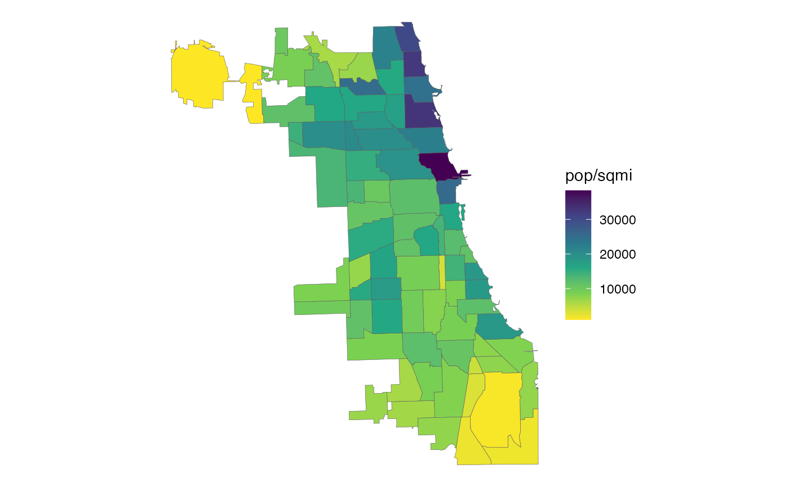

This table contains a set of factors to apportion Census tract-level data
among Chicago Community Areas (CCAs). Separate factors are provided for
apportioning housing unit, household, and population attributes. All factors
were determined by calculating the percentage of a tract's housing units,
households and population that were located in each of its component blocks,
according to the 2020 Decennial Census, and then assigning each block to a
CCA (based on the location of the block's centroid point). Use
xwalk_tract2cca for data from the 2020 decennial census or the American
Community Survey (ACS) from 2020 onward. For data from the 2010 decennial
census or ACS from 2010 through 2019, use xwalk_tract2cca_2010.
xwalk_tract2cca
xwalk_tract2cca_2010xwalk_tract2cca is a tibble with 807 rows and
6 variables:
Unique 11-digit tract ID, assigned by the Census
Bureau. Corresponds to tract_sf. Character.
Numeric CCA ID, as assigned by the City of Chicago.
Corresponds to cca_sf. Integer.
Proportion of the tract's housing units (occupied or vacant) located in the specified CCA. Multiply this by a tract-level measure of a housing attribute (e.g. vacant homes) to estimate the CCA's portion. Double.
Proportion of the tract's households (i.e. occupied housing units) living in the specified CCA. Multiply this by a tract-level measure of a household attribute (e.g. car-free households) to estimate the CCA's portion. Double.
Proportion of the tract's total population (including group quarters) living in the specified CCA. Multiply this by a tract-level measure of a population attribute (e.g. race/ethnicity) to estimate the CCA's portion. Double.
Proportion of the tract's total jobs located in the
specified CCA. Multiply this by a tract-level measure of an employment
attribute (e.g. retail jobs) to estimate the CCA's portion.
Not available in xwalk_tract2cca_2010. Double.
xwalk_tract2cca_2010 is a tibble with
805 rows and 5
variables (no emp_pct).
Generally speaking, tract boundaries align neatly with CCA boundaries as they tend to follow similar features (e.g. rivers, major roads, rail lines) but there are cases where the jobs, population, households and/or housing units in a tract are split across multiple CCAs, or else are partially within the City of Chicago and partially outside of it. For that reason, it is not appropriate to use a one-to-one tract-to-CCA assignment to apportion Census data among CCAs, and this crosswalk should be used instead.
To use this crosswalk effectively, Census data should be joined to it (not
vice versa, since tract IDs appear multiple times in this table). Once the
data is joined, it should be multiplied by the appropriate factor (depending
whether the data of interest is measured at the housing unit, household,
person or job level), and then the result should be summed by CCA. If
calculating rates, this should only be done after the counts have been summed
to CCA. The resulting table can then be joined to cca_sf for mapping, if
desired.
If your data is also available at the block group level, it is recommended
that you use that with xwalk_blockgroup2cca instead of the tract-level
allocation.
suppressPackageStartupMessages(library(dplyr))
# View the tracts with population split between multiple CCAs
filter(xwalk_tract2cca, pop_pct < 1)
#> # A tibble: 23 × 6
#> geoid_tract cca_num hu_pct hh_pct pop_pct emp_pct
#> <chr> <int> <dbl> <dbl> <dbl> <dbl>
#> 1 17031520500 52 0.997 0.997 0.994 1
#> 2 17031520500 55 0.00254 0.00264 0.00588 0
#> 3 17031520600 52 0.993 0.993 0.981 1
#> 4 17031520600 55 0.00712 0.00738 0.0194 0
#> 5 17031770602 76 0 0 0 0.0695
#> 6 17031770700 76 0 0 0 0.0406
#> 7 17031770902 76 0.0880 0.0909 0.0662 0.00847
#> 8 17031810400 10 0.0735 0.0693 0.0558 0.226
#> 9 17031823304 75 0.00335 0.00314 0.00153 0
#> 10 17031831000 22 0.531 0.527 0.574 0.0949
#> # … with 13 more rows
# Estimate CCA-level population density from tract-level Census data
df_tract <- tidycensus::get_decennial(
geography = "tract", variables = c("P1_001N"),
year = 2020, state = "IL", county = c("031", "043"), output = "wide"
) %>%
suppressMessages() %>% # Hide tidycensus messages
select(geoid_tract = GEOID, pop = P1_001N)
df_cca <- xwalk_tract2cca %>%
left_join(df_tract, by = "geoid_tract") %>%
mutate(pop = pop * pop_pct) %>%
group_by(cca_num) %>%
summarize(pop = sum(pop))
df_cca
#> # A tibble: 77 × 2
#> cca_num pop
#> <int> <dbl>
#> 1 1 55628
#> 2 2 77122
#> 3 3 57182
#> 4 4 40494
#> 5 5 35114
#> 6 6 103050
#> 7 7 70492
#> 8 8 105481
#> 9 9 11525
#> 10 10 38303
#> # … with 67 more rows
# Join to cca_sf for mapping
library(ggplot2)
cca_sf %>%
left_join(df_cca, by = "cca_num") %>%
ggplot() +
geom_sf(aes(fill = pop / sqmi), lwd = 0.1) +
scale_fill_viridis_c(direction = -1) +
theme_void()
